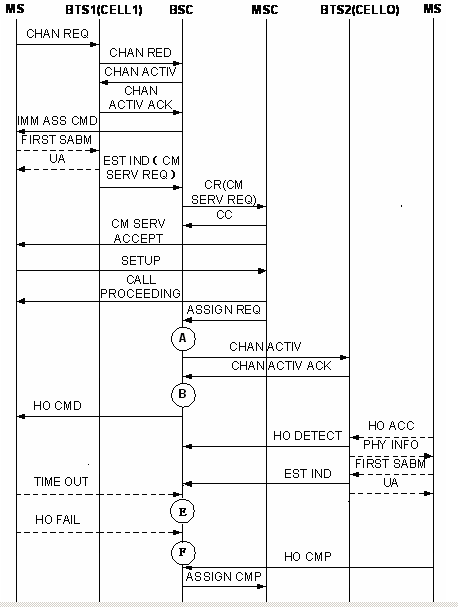

Measurement Counter
H3120W:CELL_INTRABSC_OUTCELL_HO_FAIL_SD_NOT_INCLUDE_DR_900_900
H3120X:CELL_INTRABSC_OUTCELL_HO_FAIL_SD_NOT_INCLUDE_DR_1800_1800
H3120Y:CELL_INTRABSC_OUTCELL_HO_FAIL_SD_NOT_INCLUDE_DR_900_1800
H3120Z:CELL_INTRABSC_OUTCELL_HO_FAIL_SD_NOT_INCLUDE_DR_1800_900
H3127W:CELL_INTRABSC_OUTCELL_HO_FAIL_TCHF_NOT_INCLUDE_DR_900_900
H3127X:CELL_INTRABSC_OUTCELL_HO_FAIL_TCHF_NOT_INCLUDE_DR_1800_1800
H3127Y:CELL_INTRABSC_OUTCELL_HO_FAIL_TCHF_NOT_INCLUDE_DR_900_1800
H3127Z:CELL_INTRABSC_OUTCELL_HO_FAIL_TCHF_NOT_INCLUDE_DR_1800_900
H3128W:CELL_INTRABSC_OUTCELL_HO_FAIL_TCHH_NOT_INCLUDE_DR_900_900
H3128X:CELL_INTRABSC_OUTCELL_HO_FAIL_TCHH_NOT_INCLUDE_DR_1800_1800
H3128Y:CELL_INTRABSC_OUTCELL_HO_FAIL_TCHH_NOT_INCLUDE_DR_900_1800
H3128Z:CELL_INTRABSC_OUTCELL_HO_FAIL_TCHH_NOT_INCLUDE_DR_1800_900
H3121W:CELL_INTRABSC_OUTCELL_HO_FAIL_DR_900_900
H3121X:CELL_INTRABSC_OUTCELL_HO_FAIL_DR_1800_1800
H3121Y:CELL_INTRABSC_OUTCELL_HO_FAIL_DR_900_1800
H3121Z:CELL_INTRABSC_OUTCELL_HO_FAIL_DR_1800_900
H3122A:CELL_INTRABSC_OUTCELL_HO_FAIL_UL_QLTY
H3122B:CELL_INTRABSC_OUTCELL_HO_FAIL_DL_QLTY
H3122C:CELL_INTRABSC_OUTCELL_HO_FAIL_UL_RXL
H3122D:CELL_INTRABSC_OUTCELL_HO_FAIL_DL_RXL
H3122E:CELL_INTRABSC_OUTCELL_HO_FAIL_TA
H3122F:CELL_INTRABSC_OUTCELL_HO_FAIL_BETTER_CELL
H3122G :CELL_INTRABSC_OUTCELL_HO_FAIL_LOAD
H3122H:CELL_INTRABSC_OUTCELL_HO_FAIL_RAPID_LEV_DROP
H312M:CELL_INTRABSC_OUTCELL_HO_FAIL_DUBAND_OUTTER_INNER
H312N:CELL_INTRABSC_OUTCELL_HO_FAIL_DUBAND_INNER_OUTTER
H312O:CELL_INTRABSC_OUTCELL_HO_FAIL_DUBAND_INNER_USER_MOVE
H3122I:CELL_INTRABSC_OUTCELL_HO_FAIL_MSC_INTERVENTION
H3122J:CELL_INTRABSC_OUTCELL_HO_FAIL_OM_INTERVENTION
H3122L:CELL_INTRABSC_OUTCELL_HO_FAIL_OTHER
H312Aa:CELL_INTRABSC_OUTCELL_HO_FAIL_BSC_LOOP
H312Ab:CELL_INTRABSC_OUTCELL_HO_FAIL_BTS_LOOP
H312A:CELL_INTRABSC_OUTCELL_HO_FAIL_CONG
H312H:CELL_INTRABSC_OUTCELL_HO_FAIL_NO_SPEECH_VER
H312L: CELL_INTRABSC_OUTCELL_HO_FAIL_NO_IDLE_ABIS
H312B:CELL_INTRABSC_OUTCELL_HO_FAIL_APPLY_TRSL_FAIL
H312I:CELL_INTRABSC_OUTCELL_HO_FAIL_CHACT_FAIL
H312G:CELL_INTRABSC_OUTCELL_HO_FAIL_A_INTERF_FAIL
H3120C:CELL_INTRABSC_OUTCELL_HO_FAIL_EXP_SD_NOT_INCLUDE_DR
H3121C:CELL_INTRABSC_OUTCELL_HO_FAIL_EXP_DR
H3127Cb:CELL_INTRABSC_OUTCELL_HO_FAIL_EXP_TCHF_SIG_NOT_INCLUDE_DR
H3128Cb:CELL_INTRABSC_OUTCELL_HO_FAIL_EXP_TCHH_SIG_NOT_INCLUDE_DR
H3127Ca:CELL_INTRABSC_OUTCELL_HO_FAIL_EXP_TCHF_TRAF_NOT_INCLUDE_DR
H3128Ca:CELL_INTRABSC_OUTCELL_HO_FAIL_EXP_TCHH_TRAF_NOT_INCLUDE_DR
H312Da:CELL_INTRABSC_OUTCELL_HO_FAIL_RECONN_SUCC_MS_RPT_ABNORM_REL_UNS
H312Db:CELL_INTRABSC_OUTCELL_HO_FAIL_RECONN_SUCC_MS_RPT_ABNORM_REL_CHN
H312Dc:CELL_INTRABSC_OUTCELL_HO_FAIL_RECONN_SUCC_MS_RPT_ABNORM_REL_EXP
H312Dd:CELL_INTRABSC_OUTCELL_HO_FAIL_RECONN_SUCC_MS_RPT_ABNORM_REL_NO_ACT
H312De:CELL_INTRABSC_OUTCELL_HO_FAIL_RECONN_SUCC_MS_RPT_PREEMPT
H312Df:CELL_INTRABSC_OUTCELL_HO_FAIL_RECONN_SUCC_MS_RPT_HO_TA
H312Dg:CELL_INTRABSC_OUTCELL_HO_FAIL_RECONN_SUCC_MS_RPT_CH_MODE
H312Dh:CELL_INTRABSC_OUTCELL_HO_FAIL_RECONN_SUCC_MS_RPT_FREQ
H312Di:CELL_INTRABSC_OUTCELL_HO_FAIL_RECONN_SUCC_MS_RPT_C_CLR
H312Dj:CELL_INTRABSC_OUTCELL_HO_FAIL_RECONN_SUCC_MS_RPT_SEMANT
H312Dk:CELL_INTRABSC_OUTCELL_HO_FAIL_RECONN_SUCC_MS_RPT_INV_MAN
H312Dl:CELL_INTRABSC_OUTCELL_HO_FAIL_RECONN_SUCC_MS_RPT_M_T_NE
H312Dm:CELL_INTRABSC_OUTCELL_HO_FAIL_RECONN_SUCC_MS_RPT_M_T_NC
H312Dn:CELL_INTRABSC_OUTCELL_HO_FAIL_RECONN_SUCC_MS_RPT_CONDIT
H312Do:CELL_INTRABSC_OUTCELL_HO_FAIL_RECONN_SUCC_MS_RPT_NO_CA
H312Dp:CELL_INTRABSC_OUTCELL_HO_FAIL_RECONN_SUCC_MS_RPT_PROTOCL
H312Dq:CELL_INTRABSC_OUTCELL_HO_FAIL_RECONN_SUCC_MS_RPT_OTHER
Description
During the outgoing internal inter-cell handover procedure, if the handover fails because of various causes before the BSC receives HO CMP message from the MS, the specific counter is measured based on the target channel types, handover failure causes, handover causes. Together with Outgoing Internal Inter-Cell Handover Requests and Outgoing Internal Inter-Cell Handover Commands, this counter indicates the performance of outgoing internal inter-cell handovers. Together with the counters related to the incoming internal inter-Cell handovers, this counter indicates the performance of internal inter-cell handovers.
- H3120W:CELL_INTRABSC_OUTCELL_HO_FAIL_SD_NOT_INCLUDE_DR_900_900
- H3120X:CELL_INTRABSC_OUTCELL_HO_FAIL_SD_NOT_INCLUDE_DR_1800_1800
- H3120Y:CELL_INTRABSC_OUTCELL_HO_FAIL_SD_NOT_INCLUDE_DR_900_1800
- H3120Z:CELL_INTRABSC_OUTCELL_HO_FAIL_SD_NOT_INCLUDE_DR_1800_900
- H3127W:CELL_INTRABSC_OUTCELL_HO_FAIL_TCHF_NOT_INCLUDE_DR_900_900
- H3127X:CELL_INTRABSC_OUTCELL_HO_FAIL_TCHF_NOT_INCLUDE_DR_1800_1800
- H3127Y:CELL_INTRABSC_OUTCELL_HO_FAIL_TCHF_NOT_INCLUDE_DR_900_1800
- H3127Z:CELL_INTRABSC_OUTCELL_HO_FAIL_TCHF_NOT_INCLUDE_DR_1800_900
- H3128W:CELL_INTRABSC_OUTCELL_HO_FAIL_TCHH_NOT_INCLUDE_DR_900_900
- H3128X:CELL_INTRABSC_OUTCELL_HO_FAIL_TCHH_NOT_INCLUDE_DR_1800_1800
- H3128Y:CELL_INTRABSC_OUTCELL_HO_FAIL_TCHH_NOT_INCLUDE_DR_900_1800
- H3128Z:CELL_INTRABSC_OUTCELL_HO_FAIL_TCHH_NOT_INCLUDE_DR_1800_900
Frequency Band of the Originating Cell |
Frequency Band of the Target Cell |
Counter |
|---|---|---|
GSM900, GSM900&DCS1800, GSM850, GSM850&DCS1800, GSM850&PCS1900 |
GSM900, GSM900&DCS1800, GSM850, GSM850&DCS1800, GSM850&PCS1900 |
900_900 |
GSM900, GSM900&DCS1800, GSM850, GSM850&DCS1800, GSM850&PCS1900 |
DCS1800, PCS1900 |
900_1800 |
DCS1800, PCS1900 |
GSM900, GSM900&DCS1800, GSM850, GSM850&DCS1800, GSM850&PCS1900 |
1800_900 |
DCS1800, PCS1900 |
DCS1800, PCS1900 |
1800_1800 |
- H3121W:CELL_INTRABSC_OUTCELL_HO_FAIL_DR_900_900
- H3121X:CELL_INTRABSC_OUTCELL_HO_FAIL_DR_1800_1800
- H3121Y:CELL_INTRABSC_OUTCELL_HO_FAIL_DR_900_1800
- H3121Z:CELL_INTRABSC_OUTCELL_HO_FAIL_DR_1800_900
- The following counters provide the numbers of failed outgoing internal inter-cell handovers initiated by the BSC using BQ handover algorithm based on the UL or DL receive quality in the MR. They are measured when the BSC terminates the outgoing internal inter-cell handover.
- H3122A:CELL_INTRABSC_OUTCELL_HO_FAIL_UL_QLTY
- H3122B:CELL_INTRABSC_OUTCELL_HO_FAIL_DL_QLTY
 NOTE:
NOTE: The receive quality is evaluated with bit error ratio (BER), and the radio link quality is evaluated with the quality level in the MR. A high BER may be attributed to an excessively low signal level or channel interference.
BQ handover algorithm is for emergency handover based on the uplink or downlink receive quality over the Um interface. If uplink quality rank is greater than or equal to the UL Qual. Threshold, the BQ handover is initiated because of bad uplink quality. If downlink quality rank is greater than or equal to the DL Qual. Threshold, the BQ handover is initiated because of bad downlink quality.
- The following counters provide the numbers of failed outgoing internal inter-cell handovers initiated by the BSC using Edge handover algorithm based on the UL or DL receive level in the MR. They are measured when the BSC terminates the outgoing internal inter-cell handover.
- H3122C:CELL_INTRABSC_OUTCELL_HO_FAIL_UL_RXL
- H3122D:CELL_INTRABSC_OUTCELL_HO_FAIL_DL_RXL
NOTE: Edge handover algorithm is used to determine whether to initiate a handover based on the uplink or downlink receive level over the Um interface. If the uplink receive level is smaller than the Edge HO UL RX_LEV Threshold, the edge handover is initiated because of the low uplink level. If the downlink receive level is smaller than the Edge HO DL RX_LEV Threshold, the edge handover is initiated because of the low downlink level.
- The following counters provide the numbers of failed outgoing internal inter-cell handovers initiated by the BSC using TA handover algorithm based on the TA value in the measurement report. They are measured when the BSC terminates the outgoing internal inter-cell handover.
- H3122E:CELL_INTRABSC_OUTCELL_HO_FAIL_TA
NOTE: TA for a common cell: 0-63; TA for a underlaid subcell in a dual-timeslot extended cell: 0-229. If there are 63 bits and each bit step is 553.5 m, the distance is 35 km.
TA handover algorithm is for emergency handover based on the TA value reported by the BTS. If the TA value is greater than the TA Threshold, a TA handover is initiated.
- The following counter provides the number of failed outgoing internal inter-cell handovers initiated by the BSC based on the measurement reports using algorithms such as power budget handover (PBGT), inter-layer handover (better cell), and better 3G cell handover. It is measured when the BSC terminates the outgoing internal inter-cell handover.
- H3122F:CELL_INTRABSC_OUTCELL_HO_FAIL_BETTER_CELL
NOTE: PBGT handover algorithm is used to decide whether to initiate a handover to a valid cell with a lower path loss.
Inter-layer (better cell) handover algorithm is used to decide whether to initiate a handover to a cell which is on a lower layer than the serving cell and whose downlink level is greater than the Inter-layer HO Threshold.
Better 3G cell handover algorithm is used to determine whether to initiate a handover based on the measurement object. If the measurement object is RSCP and the measured result is greater than the RSCP Threshold for Better 3G Cell HO, or if the measurement object is Ec/No and the measured result is greater than the Ec/NO Threshold for Better 3G Cell HO, then a handover to a 3G better cell is initiated.
- The following counter provides the numbers of failed outgoing internal inter-cell handovers initiated by the BSC using load handover algorithm based on the current load conditions in the serving cell. It is measured when the BSC terminates the outgoing internal inter-cell handover.
- H3122G :CELL_INTRABSC_OUTCELL_HO_FAIL_LOAD
NOTE: Load handover algorithm is used to decide whether to initiate a handover based on the load conditions on the serving cell and the neighboring cell. If the system signaling flow is smaller than the System Flux Threshold for Load HO, the load on the serving cell is greater than the Load HO Threshold and the load on the target cell is smaller than the Load Req.on Candidate Cell, a load handover is initiated.
- The following counters provide the numbers of failed outgoing internal inter-cell handovers initiated by the BSC using the rapid level drop algorithm based on the measurement reports. It is measured when the BSC terminates the outgoing internal inter-cell handover.
- H3122H:CELL_INTRABSC_OUTCELL_HO_FAIL_RAPID_LEV_DROP
NOTE: Rapid lever drop algorithm is used to decide whether to initiate a handover based on the downlink receive level in the measurement report. When the drop slope of the downlink receive level meets the specified threshold, a rapid lever drop handover is initiated.
- If the enhanced dual-band network is enabled, the following counters provides the numbers of failed outgoing internal inter-cell handovers based on the algorithms for enhanced dual-band network handover and the measurement report. They are measured when the outgoing internal inter-cell handover is terminated.
- The following counter provides the number of failed outgoing internal inter-cell handovers due to high load in the underlaid subcell. It is measured when the outgoing internal inter-cell handover is terminated.
- H311M:CELL_INTRABSC_OUTCELL_HO_FAIL_DUBAND_OUTTER_INNER
- The following counter provides the number of failed outgoing internal inter-cell handovers due to low load in the underlaid subcell. It is measured when the outgoing internal inter-cell handover is terminated.
- H311N:CELL_INTRABSC_OUTCELL_HO_ FAIL _DUBAND_INNER_OUTTER
- The following counter provides the number of failed outgoing internal inter-cell handovers due to call movement in the overlaid subcell. It is measured when the outgoing internal inter-cell handover is terminated.
- H311O:CELL_INTRABSC_OUTCELL_HO_ FAIL _DUBAND_INNER_USER_MOVE
NOTE: The handovers in the enhanced dual-band network include:- (1) Handover due to high load in the underlaid subcell
Based on the loads in the overlaid and underlaid subcells, the downlink receive level and system flux in the MRs, a handover from the underlaid subcell to the overlaid subcell is initiated when the following conditions are met.
- The load in the underlaid subcell is higher than the UL Subcell General Overload Threshold.
- The load in the overlaid subcell is lower than the Inner Cell Serious OverLoad Thred.
- The system flux is no higher than Allowed Flow Control Level of UL And OL Subcell HO.
- The current call is within the handover band that allows handover.
- (2) Handover due to low load in the underlaid subcell
Based on the load in the underlaid subcell, the downlink receive level and system flux in the measurement reports, a handover from the overlaid subcell to the underlaid subcell is initiated when the following conditions are met.
- The load in the underlaid subcell is lower than the UL Subcell Lower Load Threshold.
- The system flux is no higher than Allowed Flow Control Level of UL And OL Subcell HO.
- The current call is within the handover band that allows handover.
- (3) Handover due to call movement in the overlaid subcell
Based on the load in the underlaid subcell, the downlink receive level and system flux in the measurement reports, a handover from the underlaid subcell to the overlaid subcell is initiated when the following conditions are met.
- The downlink receive level in the underlaid subcell is lower than the Outgoing OL Subcell HO level Threshold.
- The difference of the downlink receive level between the overlaid subcell and the neighbor cell is lower than the Distance Hysterisis Between Boudaries of UL And OL Subcells (dB).
- The following counter provides the number of failed outgoing internal inter-cell handovers due to high load in the underlaid subcell. It is measured when the outgoing internal inter-cell handover is terminated.
- The following counter provides the number of failed outgoing internal inter-cell handovers initiated by the BSC based on the HANDOVER CANDIDATE ENQUIRE message received from the MSC. It is measured when the outgoing internal inter-cell handover is terminated.
- H3122I:CELL_INTRABSC_OUTCELL_HO_FAIL_MSC_INTERVENTION
NOTE: After receiving the HANDOVER CANDIDATE ENQUIRE message from the MSC, the BSC instructs proper MSs in the source cell to perform forced handover, based on the originating cell ID and the number of MSs to perform handovers contained in that message. The MSs that are forced to perform handover are as many as the specified number of MSs contained in the message.
- The following counter provides the number of failed outgoing internal inter-cell handovers initiated manually by the the maintenance personnel from the maintenance terminal. It is measured when the outgoing internal inter-cell handover is terminated.
- H3122J:CELL_INTRABSC_OUTCELL_HO_FAIL_OM_INTERVENTION
- When the BSC local switch is enabled, the calls that meet the BSC local switch conditions communicate using the BSC local switch, and those meet the BTS local switch conditions communicate using the BTS local switch. The following counter provides the numbers of failed outgoing internal inter-cell handovers initiated by the BSC respectively during BSC loopback and BTS loopback. They are measured when the outgoing internal inter-cell handover is terminated.
- H312Aa:CELL_INTRABSC_OUTCELL_HO_FAIL_BSC_LOOP
- H312Ab:CELL_INTRABSC_OUTCELL_HO_FAIL_BTS_LOOP
- The following counter provides the number of failed outgoing internal inter-cell handovers due to other causes except the previous ones. It is measured when the outgoing internal inter-cell handover is terminated.
- H3122L:CELL_INTRABSC_OUTCELL_HO_FAIL_OTHER
- 1) Causes related to resource allocation:
- No traffic channel is available.
- No speech version is available.
- No Abis resource is available.
- The BSC fails to obtain the terrestrial resources.
- 2) Causes related to access on the Um interface
- The MS fails to access the new channel and then reconnects to the old channel.
- The timer for the BSC to wait for an HO CMP message expires.
- 3) Abnormal causes
- The BSC fails to activate the allocated channel.
- A fault occurs on the A interface.
- 1) The following counters are measured when the outgoing internal inter-cell handover fails because of failed allocation of relevant resources.
- If outgoing internal inter-cell handover fails because no channel is available in the target cell, the following counter is measured:
- H312A:CELL_INTRABSC_OUTCELL_HO_FAIL_CONG
- If an outgoing internal inter-cell handover fails because no proper speech version is available based on the speech versions carried in the ASS REQ message from the MSC, the speech versions supported by the target cell, and the speech versions permitted by the A interface phase tag, the following counter is measured:
- H312H:CELL_INTRABSC_OUTCELL_HO_FAIL_NO_SPEECH_VER
- If an outgoing internal inter-cell handover fails because no circuit resource is available on the Abis interface in the target cell when the Abis dynamic allocation is enabled, the following counter is measured:
- H312L: CELL_INTRABSC_OUTCELL_HO_FAIL_NO_IDLE_ABIS
- If an outgoing internal inter-cell handover fails because the BSC fails to obtain the circuit resource when establishing the terrestrial connection, the following counter is measured:
- H312B:CELL_INTRABSC_OUTCELL_HO_FAIL_APPLY_TRSL_FAIL
- If outgoing internal inter-cell handover fails because no channel is available in the target cell, the following counter is measured:
- (2) The following counters provide the numbers of failed internal intra-cell handovers when the MS fails to access the new channel on the Um interface.
- During the handover procedure excluding directed retry, after the BSC successfully allocates and activates the channel in the target cell, it sends an HO CMD message to the MS and starts the timer T3103 to wait for the HO CMP message. If no HO CMP is received by the BSC before T3103 expires, the BSC releases the call. Then, the specific one of the following counters is measured in the target cell based on the type of the target channel, that is, signaling channel (SDCCH/TCHF/TCCH) or traffic channel (TCHF/TCHH):
- H3120C:CELL_INTRABSC_OUTCELL_HO_FAIL_EXP_SD_NOT_INCLUDE_DR
- H3127Cb:CELL_INTRABSC_OUTCELL_HO_FAIL_EXP_TCHF_SIG_NOT_INCLUDE_DR
- H3128Cb:CELL_INTRABSC_OUTCELL_HO_FAIL_EXP_TCHH_SIG_NOT_INCLUDE_DR
- H3127Ca:CELL_INTRABSC_OUTCELL_HO_FAIL_EXP_TCHF_TRAF_NOT_INCLUDE_DR
- H3128Ca:CELL_INTRABSC_OUTCELL_HO_FAIL_EXP_TCHH_TRAF_NOT_INCLUDE_DR
- In directed retry procedure, the BSC sends an HO CMD message to the MS through the originating cell and starts timer T3103 to wait for an HO CMP message. If no HO CMP is received by the BSC before T8 expires, the following counter is measured:
- H3121C:CELL_INTRABSC_OUTCELL_HO_FAIL_EXP_DR
- In the outgoing internal inter-cell handover procedure, the BSC sends an HO CMD message to the MS through the originating cell and initiates a timer to wait for an HO CMP message. If the MS reconnects to the old channel and sends an HO FAIL message on the old channel before the timer expires, the specific one of the following counters is measured in the originating cell based on the cause value.
- The counter H312Da:CELL_INTRABSC_OUTCELL_HO_FAIL_RECONN_SUCC_MS_RPT_ABNORM_REL_UNS is measured when the cause value carried in the HO FAIL message is Abnormal Release, Unspecified.
- The counter H312Db:CELL_INTRABSC_OUTCELL_HO_FAIL_RECONN_SUCC_MS_RPT_ABNORM_REL_CHN is measured when the cause value carried in the HO FAIL message is Abnormal Release, Channel Unacceptable.
- The counter H312Dc:CELL_INTRABSC_OUTCELL_HO_FAIL_RECONN_SUCC_MS_RPT_ABNORM_REL_EXP is measured when the cause value carried in the HO FAIL message is Abnormal Release, Timer Expired.
- The counter H312Dd:CELL_INTRABSC_OUTCELL_HO_FAIL_RECONN_SUCC_MS_RPT_ABNORM_REL_NO_ACT is measured when the cause value carried in the HO FAIL message is Abnormal Release, No Activity on the Radio Path.
- The counter H312De:CELL_INTRABSC_OUTCELL_HO_FAIL_RECONN_SUCC_MS_RPT_PREEMPT is measured when the cause value carried in the HO FAIL message is Preemptive Release.
- The counter H312Df:CELL_INTRABSC_OUTCELL_HO_FAIL_RECONN_SUCC_MS_RPT_HO_TA is measured when the cause value carried in the HO FAIL message is Handover Failed, Timing Advance out of Range.
The counter H312Dg:CELL_INTRABSC_OUTCELL_HO_FAIL_RECONN_SUCC_MS_RPT_CH_MODE is measured when the cause value carried in the HO FAIL message is Channel Mode Unavailable.
The counter H312Dh:CELL_INTRABSC_OUTCELL_HO_FAIL_RECONN_SUCC_MS_RPT_FREQ is measured when the cause value carried in the HO FAIL message is Frequency Unavailable.
- The counter H312Di:CELL_INTRABSC_OUTCELL_HO_FAIL_RECONN_SUCC_MS_RPT_C_CLR is measured when the cause value carried in the HO FAIL message is Call Already Cleared.
- The counter H312Dj:CELL_INTRABSC_OUTCELL_HO_FAIL_RECONN_SUCC_MS_RPT_SEMANT is measured when the cause value carried in the HO FAIL message is Semantically Incorrect Message.
- The counter H312Dk:CELL_INTRABSC_OUTCELL_HO_FAIL_RECONN_SUCC_MS_RPT_INV_MAN is measured when the cause value carried in the HO FAIL message is Invalid Mandatory Information.
- The counter H312Dl:CELL_INTRABSC_OUTCELL_HO_FAIL_RECONN_SUCC_MS_RPT_M_T_NE is measured when the cause value carried in the HO FAIL message is Message Type Non-existent or Not Implemented.
- The counter H312Dm:CELL_INTRABSC_OUTCELL_HO_FAIL_RECONN_SUCC_MS_RPT_M_T_NC is measured when the cause value carried in the HO FAIL message is Message Type Not Compatible with Protocol State.
- The counter H312Dn:CELL_INTRABSC_OUTCELL_HO_FAIL_RECONN_SUCC_MS_RPT_CONDIT is measured when the cause value carried in the HO FAIL message is Conditional IE Error.
- The counter H312Do:CELL_INTRABSC_OUTCELL_HO_FAIL_RECONN_SUCC_MS_RPT_NO_CA is measured when the cause value carried in the HO FAIL message is No Cell Allocation Available.
- The counter H312Dp:CELL_INTRABSC_OUTCELL_HO_FAIL_RECONN_SUCC_MS_RPT_PROTOCL is measured when the cause value carried in the HO FAIL message is Protocol Error Unspecified.
- The counter H312Dq:CELL_INTRABSC_OUTCELL_HO_FAIL_RECONN_SUCC_MS_RPT_OTHER is measured when the cause value carried in the HO FAIL message is Other Causes.
- During the handover procedure excluding directed retry, after the BSC successfully allocates and activates the channel in the target cell, it sends an HO CMD message to the MS and starts the timer T3103 to wait for the HO CMP message. If no HO CMP is received by the BSC before T3103 expires, the BSC releases the call. Then, the specific one of the following counters is measured in the target cell based on the type of the target channel, that is, signaling channel (SDCCH/TCHF/TCCH) or traffic channel (TCHF/TCHH):
- 3) The following counters are measured when the outgoing internal inter-cell handover fails because of equipment faults.
- After the BSC successfully performs channel allocation and speech version confirmation in the target cell, it sends a CH ACT message to the BTS for activating the channel, and starts the corresponding timer to wait for the response. If the BSC receives a CH ACT NACK or no response from the BTS before the timer expires, the following counter is measured:
- H312I:CELL_INTRABSC_OUTCELL_HO_FAIL_CHACT_FAIL
- If an outgoing internal intra-cell handover fails because the BSC locally releases the call after receiving an SS7 link abnormality indication, the following counter is measured:
- H312G:CELL_INTRABSC_OUTCELL_HO_FAIL_A_INTERF_FAIL
- After the BSC successfully performs channel allocation and speech version confirmation in the target cell, it sends a CH ACT message to the BTS for activating the channel, and starts the corresponding timer to wait for the response. If the BSC receives a CH ACT NACK or no response from the BTS before the timer expires, the following counter is measured:
Unit
Integer number or integer.
Measurement Point
Figure 1 and Figure 2 shows the measurement of counters related to failed outgoing internal inter-cell handovers.


- As shown in Figure 1 and Figure 2, the specific one of the following counters is measured at A if the outgoing internal inter-cell handover fails, respectively because no channel is available in the target cell, no speech version is available, no Abis interface resource is available, or the BSC fails to activate the allocated channel:
- H312A:CELL_INTRABSC_OUTCELL_HO_FAIL_CONG
- H312L: CELL_INTRABSC_OUTCELL_HO_FAIL_NO_IDLE_ABIS
- H312H:CELL_INTRABSC_OUTCELL_HO_FAIL_NO_SPEECH_VER
- H312I:CELL_INTRABSC_OUTCELL_HO_FAIL_CHACT_FAIL
- As shown in Figure 1 and Figure 2, if the outgoing internal inter-cell handover fails because the BSC fails to establish the terrestrial link, the following counter is measured at B:
- H312B:CELL_INTRABSC_OUTCELL_HO_FAIL_APPLY_TRSL_FAIL
- As shown in Figure 1, during the outgoing internal inter-cell handover procedure (excluding directed retry), if T3103 waiting for the HO CMP message expires after the BSC sends the HO CMD to the MS, the specific one of the following counters is measured at E:
- H3120C:CELL_INTRABSC_OUTCELL_HO_FAIL_EXP_SD_NOT_INCLUDE_DR
- H3127Cb:CELL_INTRABSC_OUTCELL_HO_FAIL_EXP_TCHF_SIG_NOT_INCLUDE_DR
- H3128Cb:CELL_INTRABSC_OUTCELL_HO_FAIL_EXP_TCHH_SIG_NOT_INCLUDE_DR
- H3127Ca:CELL_INTRABSC_OUTCELL_HO_FAIL_EXP_TCHF_TRAF_NOT_INCLUDE_DR
- H3128Ca:CELL_INTRABSC_OUTCELL_HO_FAIL_EXP_TCHH_TRAF_NOT_INCLUDE_DR
- As shown in Figure 2, during the outgoing internal inter-cell handover procedure (directed retry), if T3103 waiting for the HO CMP message expires after the BSC sends the HO CMD to the MS, the specific one of the following counters is measured at E:
- H3121C:CELL_INTRABSC_OUTCELL_HO_FAIL_EXP_DR
- As shown in Figure 1 and Figure 2, during the outgoing internal inter-cell handover procedure, if the BSC receives the HO FAIL message from the MS after the BSC sends the HO CMD message to the MS and the MS cannot access the new channel, the following counter is measured at F:
- H312Da:CELL_INTRABSC_OUTCELL_HO_FAIL_RECONN_SUCC_MS_RPT_ABNORM_REL_UNS
- H312Db:CELL_INTRABSC_OUTCELL_HO_FAIL_RECONN_SUCC_MS_RPT_ABNORM_REL_CHN
- H312Dc:CELL_INTRABSC_OUTCELL_HO_FAIL_RECONN_SUCC_MS_RPT_ABNORM_REL_EXP
- H312Dd:CELL_INTRABSC_OUTCELL_HO_FAIL_RECONN_SUCC_MS_RPT_ABNORM_REL_NO_ACT
- H312De:CELL_INTRABSC_OUTCELL_HO_FAIL_RECONN_SUCC_MS_RPT_PREEMPT
- H312Df:CELL_INTRABSC_OUTCELL_HO_FAIL_RECONN_SUCC_MS_RPT_HO_TA
- H312Dg:CELL_INTRABSC_OUTCELL_HO_FAIL_RECONN_SUCC_MS_RPT_CH_MODE
- H312Dh:CELL_INTRABSC_OUTCELL_HO_FAIL_RECONN_SUCC_MS_RPT_FREQ
- H312Di:CELL_INTRABSC_OUTCELL_HO_FAIL_RECONN_SUCC_MS_RPT_C_CLR
- H312Dj:CELL_INTRABSC_OUTCELL_HO_FAIL_RECONN_SUCC_MS_RPT_SEMANT
- H312Dk:CELL_INTRABSC_OUTCELL_HO_FAIL_RECONN_SUCC_MS_RPT_INV_MAN
- H312Dl:CELL_INTRABSC_OUTCELL_HO_FAIL_RECONN_SUCC_MS_RPT_M_T_NE
- H312Dm:CELL_INTRABSC_OUTCELL_HO_FAIL_RECONN_SUCC_MS_RPT_M_T_NC
- H312Dn:CELL_INTRABSC_OUTCELL_HO_FAIL_RECONN_SUCC_MS_RPT_CONDIT
- H312Do:CELL_INTRABSC_OUTCELL_HO_FAIL_RECONN_SUCC_MS_RPT_NO_CA
- H312Dp:CELL_INTRABSC_OUTCELL_HO_FAIL_RECONN_SUCC_MS_RPT_PROTOCL
- H312Dq:CELL_INTRABSC_OUTCELL_HO_FAIL_RECONN_SUCC_MS_RPT_OTHER
- As shown in Figure 1 and Figure 2, if the outgoing internal inter-cell handover fails because the BSC detects an SS7 link failure on the A interface and releases the call, the following counter is measured at A, B, E, and F:
- H312G:CELL_INTRABSC_OUTCELL_HO_FAIL_A_INTERF_FAIL
- As shown in Figure 1, if the outgoing internal inter-cell handover (excluding directed retry) fails, the specific one of the following counters is measured at A, B, E, and F irrespective of the cause:
- H3120W:CELL_INTRABSC_OUTCELL_HO_FAIL_SD_NOT_INCLUDE_DR_900_900
- H3120X:CELL_INTRABSC_OUTCELL_HO_FAIL_SD_NOT_INCLUDE_DR_1800_1800
- H3120Y:CELL_INTRABSC_OUTCELL_HO_FAIL_SD_NOT_INCLUDE_DR_900_1800
- H3120Z:CELL_INTRABSC_OUTCELL_HO_FAIL_SD_NOT_INCLUDE_DR_1800_900
- H3127W:CELL_INTRABSC_OUTCELL_HO_FAIL_TCHF_NOT_INCLUDE_DR_900_900
- H3127X:CELL_INTRABSC_OUTCELL_HO_FAIL_TCHF_NOT_INCLUDE_DR_1800_1800
- H3127Y:CELL_INTRABSC_OUTCELL_HO_FAIL_TCHF_NOT_INCLUDE_DR_900_1800
- H3127Z:CELL_INTRABSC_OUTCELL_HO_FAIL_TCHF_NOT_INCLUDE_DR_1800_900
- H3128W:CELL_INTRABSC_OUTCELL_HO_FAIL_TCHH_NOT_INCLUDE_DR_900_900
- H3128X:CELL_INTRABSC_OUTCELL_HO_FAIL_TCHH_NOT_INCLUDE_DR_1800_1800
- H3128Y:CELL_INTRABSC_OUTCELL_HO_FAIL_TCHH_NOT_INCLUDE_DR_900_1800
- H3128Z:CELL_INTRABSC_OUTCELL_HO_FAIL_TCHH_NOT_INCLUDE_DR_1800_900
- As shown in Figure 2, if the outgoing internal inter-cell handover (directed retry) fails, the specific one of the following counters is measured at A, B, E, and F irrespective of the cause:
- H3121W:CELL_INTRABSC_OUTCELL_HO_FAIL_DR_900_900
- H3121X:CELL_INTRABSC_OUTCELL_HO_FAIL_DR_1800_1800
- H3121Y:CELL_INTRABSC_OUTCELL_HO_FAIL_DR_900_1800
- H3121Z:CELL_INTRABSC_OUTCELL_HO_FAIL_DR_1800_900
- As shown in Figure 1 and Figure 2, if the outgoing internal inter-cell handover fails, the following counter is measured at A, B, E, and F, irrespective of the cause:
- H3122A:CELL_INTRABSC_OUTCELL_HO_FAIL_UL_QLTY H3122B:CELL_INTRABSC_OUTCELL_HO_FAIL_DL_QLTY
- H3122C:CELL_INTRABSC_OUTCELL_HO_FAIL_UL_RXL H3122D:CELL_INTRABSC_OUTCELL_HO_FAIL_DL_RXL
- H3122E:CELL_INTRABSC_OUTCELL_HO_FAIL_TA H3122F:CELL_INTRABSC_OUTCELL_HO_FAIL_BETTER_CELL
- H3122G :CELL_INTRABSC_OUTCELL_HO_FAIL_LOAD H3122H:CELL_INTRABSC_OUTCELL_HO_FAIL_RAPID_LEV_DROP
- H312M:CELL_INTRABSC_OUTCELL_HO_FAIL_DUBAND_OUTTER_INNER
- H312N:CELL_INTRABSC_OUTCELL_HO_FAIL_DUBAND_INNER_OUTTER
- H312O:CELL_INTRABSC_OUTCELL_HO_FAIL_DUBAND_INNER_USER_MOVE
- H3122I:CELL_INTRABSC_OUTCELL_HO_FAIL_MSC_INTERVENTION
- H3122J:CELL_INTRABSC_OUTCELL_HO_FAIL_OM_INTERVENTION
- H3122L:CELL_INTRABSC_OUTCELL_HO_FAIL_OTHER
- H312Aa:CELL_INTRABSC_OUTCELL_HO_FAIL_BSC_LOOP
- H312Ab:CELL_INTRABSC_OUTCELL_HO_FAIL_BTS_LOOP
Formula
This is an original counter without involving any formula.